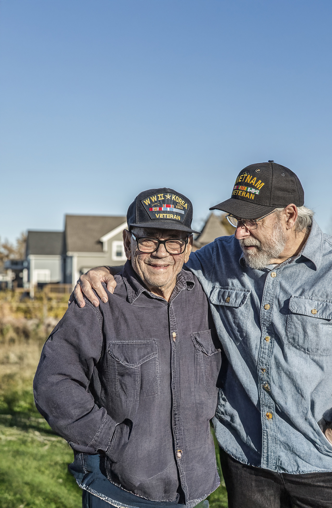
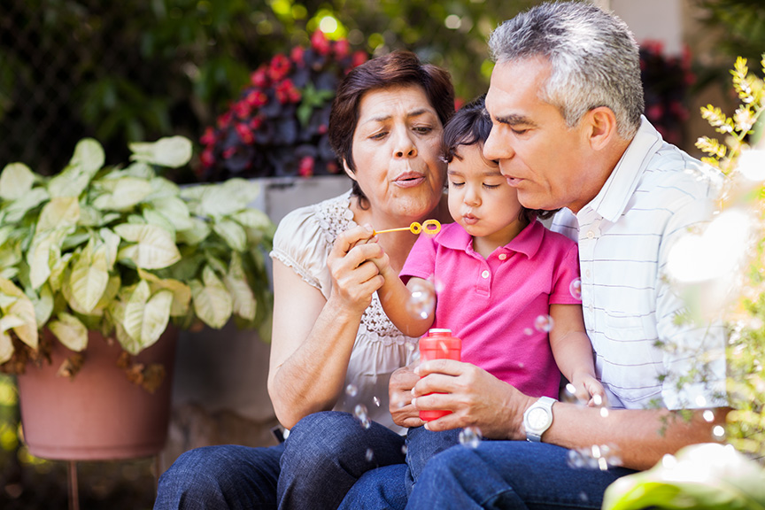
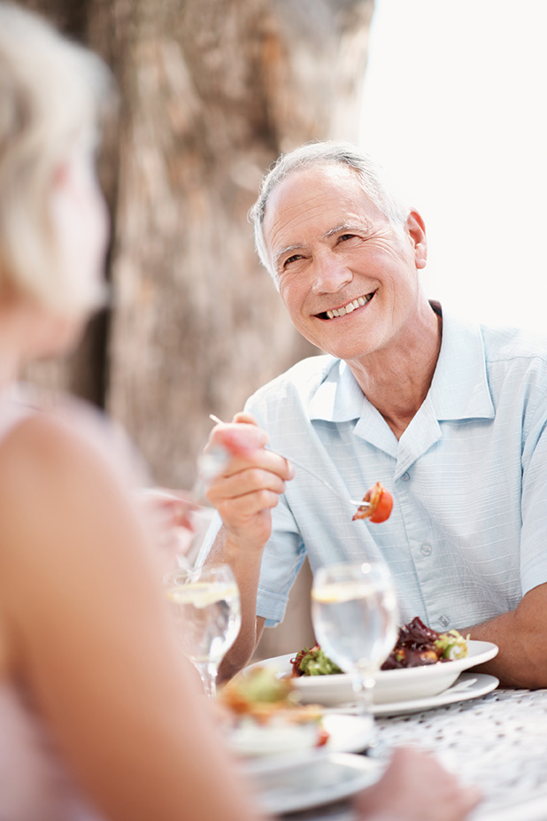
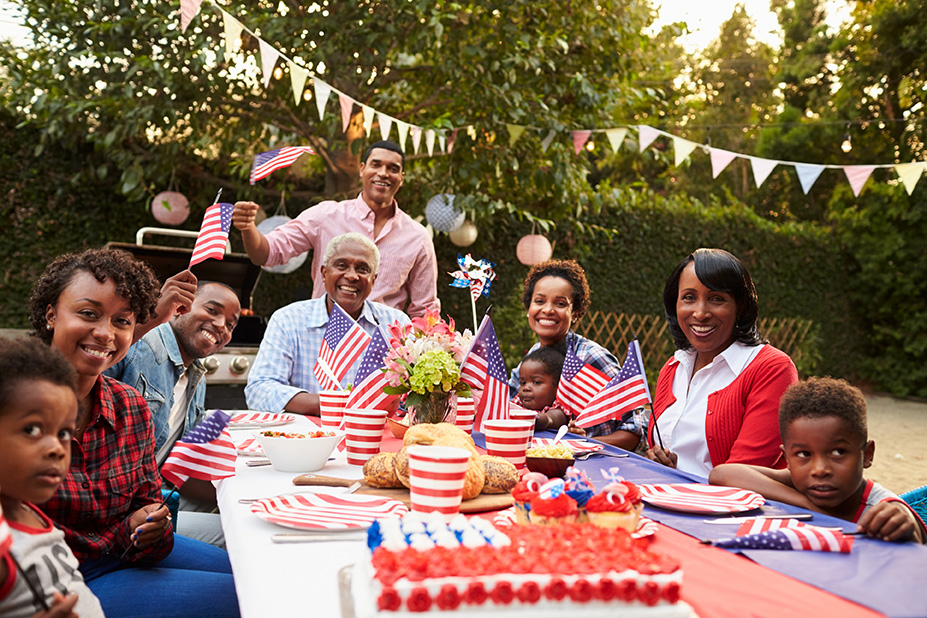

Happy July, everyone! It's been an amazing summer so far — cookouts, nights with friends, and refreshing Happy Hours to help us cool down. Here on campus, midsummer means the party is just getting started: live entertainment, themed events, and afternoons outside in the sunshine. We hope you'll keep joining us for the fun, the laughter, and the little moments that make this time of year special. Have a great month!
Legacy Lane residents and their families created special moments with ShoeBox memories. Family members shared treasured trinkets, recipe photos, and keepsakes — small objects, large stories — in memory of the people they love.

The Oaks at Jamestown celebrates its second anniversary. Two years in, our community has blossomed into a place where residents, families, and team members create meaningful connections, embrace wellness, and enjoy life to the fullest — and we look forward to many more years of a vibrant, welcoming community.


Chef Circle brings residents together for a unique culinary experience — delicious food, engaging conversation, and a behind-the-scenes look at the creativity of our dining team.
A wonderful chance to connect with friends, discover new flavors, and celebrate the joy of great food in a welcoming atmosphere.
Campus in Color is a vibrant celebration of creativity, community, and self-expression. Residents, team members, and families transform our campus into a living masterpiece — bringing color, joy, and connection to every corner of the campus, from painted afternoons in the garden to a palette that keeps changing all month.

That's the inside view for July. The front page, back page, and this month's Word Search arrive with the Campus Home Office package — see you at the table.